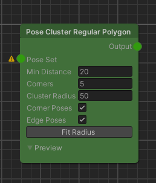
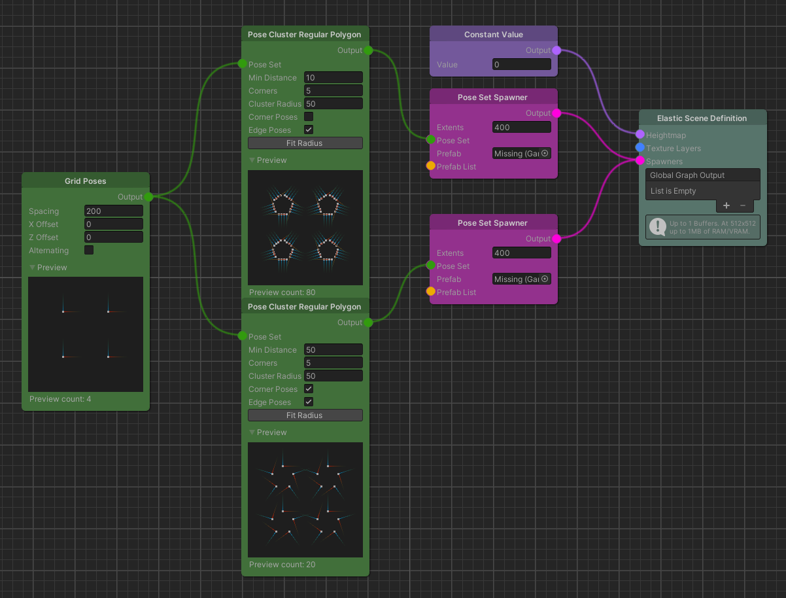
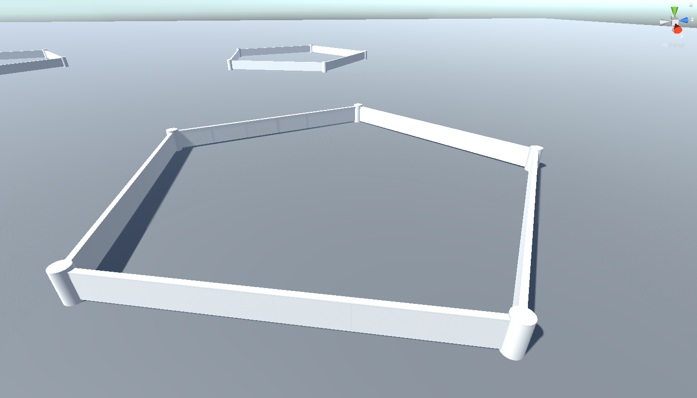

Pose Cluster Regular Polygon
Overview
The Pose Cluster Regular Polygon node samples a cluster of poses around an initial pose in the shape of a regular polygon.

Detailed Explanation
The basic idea behind this node is to procedurally sample a cluster of newly generated poses around an initial set of poses. The shape that the cluster takes is restricted by the properties of a regular polygon, so equal sides and inner angles. These properties are adjusted by the parameters the user sets. Note that the initial set of poses is discarded.
An arbitrary set of initial poses can be used to sample clusters from. Because of this and the fact that we will most likely use the newly generated poses to spawn game objects that should not overlap, we curated the Min Distance parameter as the first one. This parameter defines the minimum distance that the clustered poses will have towards their neighbors. Min Distance has a direct influence on the cluster density.
The Corners parameter is used to control the very shape of the regular polygon (e.g. 3 corners result in a triangle, 4 in a square..).
To control the size of the cluster, that is, the distance that each corner pose will have towards the center, we set a Cluster Radius. Note here, that we will find a button at the bottom of the node's parameter stack called Fit Radius. The button is used to find the next closest radius that results in each pose's distance towards its neighbors being equal to the set Min Distance parameter. This can come in handy if you want pack spawned objects tightly together.
Overlapping clusters will not fulfill the minimum distance constraint.
Parameters
Inputs
| Name | Type | Description |
|---|---|---|
| Input | PoseSet | The initial set of poses to sample the cluster poses from. |
Controls
| Name | Type | Description |
|---|---|---|
| Min Distance | float | The minimum distance that clustered poses will have towards one another. |
| Corners | int | The number of corners of the regular polygon. |
| Cluster Radius | float | The distance between the corners and the cluster center. |
| Corner Poses | bool | States whether to generate poses at the corners. |
Use Cases
Spawning Objects In Clusters

In this example we use the Pose Cluster Regular Polygon node twice to spawn pentagonal shapes that are made out of wall pieces and corner pieces. The first step for the proper parameterization of the node is to set the Min Distance according to the extents and the pivot of the mesh that we want to spawn at the generated pose positions. Our wall pieces are 20 meters wide and the pivot is in the center, so we set the minimum distance to 10 meters. Corners set to 5 will create the pentagon shape. To realize a wall without any gaps we choose a rough estimate of how large the Cluster Radius is supposed to be and then hit the Fit Cluster button. Uncheck Corner Poses to get rid of the shape's corners.
For the second instance of the node we choose the same Corners and Cluster Radius parameter, keep the corner poses and finally increase the Min Distance parameter until we only see corner poses left. We do not want to click the button this time.

Further Reading
- Regular Polygon properties